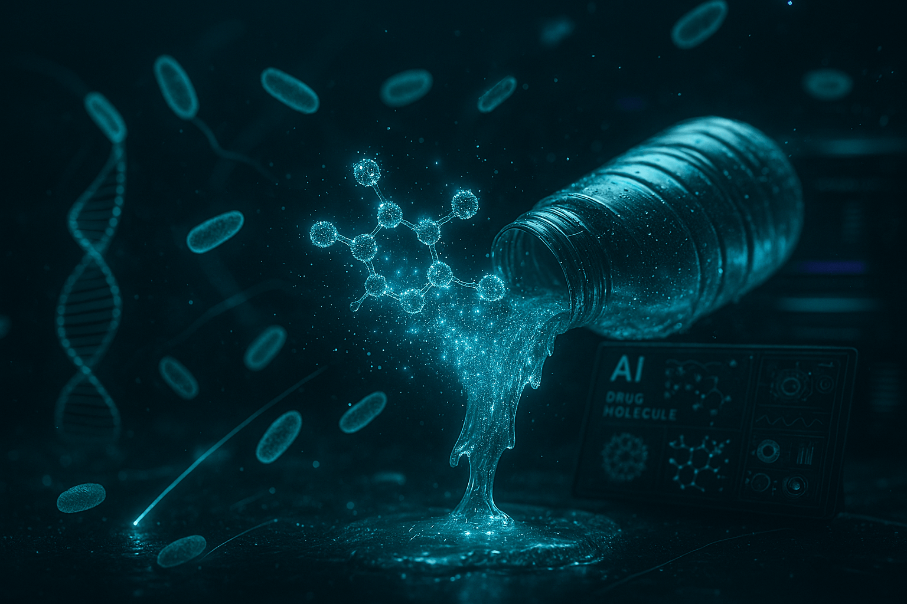

Neurochip That Reads Thoughts: Coming in 2026
Imagine thinking: “Write: Hello, world” — and the text appears on screen. No hands. No voice. Just your brain.
In 2025, this is no longer science fiction. This is reality.
Who’s Already Reading Minds
Three companies are leading the brain-computer interface (BCI) race:
- Neuralink (Elon Musk) — 2 patients, 1024 electrodes;
- Synchron (Australia) — 6 patients, stent in vein;
- NeuraMatrix (China) — 12 patients, 100 words/min.
“We’re not enhancing humans. We’re giving them their voice back.” — Tom Oxley, CEO of Synchron
How the Neurochip Works
A coin-sized chip is implanted in the motor cortex. It:
- Reads electrical impulses from neurons (up to 10,000/sec);
- Transmits data via Bluetooth to a smartphone;
- AI decodes signals into words or commands.
Accuracy: 92% for words, 78% for full sentences.
“It’s like learning to play piano — the brain adapts in 3 days.”
First Results — 2025
| Patient | Before Implant | After |
|---|---|---|
| Noland (USA) | 0 words/min | 90 words/min |
| Li (China) | Voice input | 120 words/min with thoughts |
Patients play chess, write emails, control drones — with thought alone.
What’s Coming in 2026
- Neuralink N2: 4000 electrodes, wireless charging;
- Synchron Stentrode 2.0: via vein, no skull drilling;
- NeuraMatrix Pro: real-time translation of thoughts into 5 languages.
First commercial implants — $50,000 for paralyzed patients.

But There’s a Dark Side
Risks:
- Hackers could “read” your thoughts;
- Ads in your head (like Black Mirror);
- Inequality: only the rich get super-intelligence.
“We must not let technology read us before we understand ourselves.” — Yuval Noah Harari, 2025
The Future: 2030
- Thoughts → text → speech (for the mute);
- Memory sharing;
- Learning in sleep via neurochip.
Neuralink is already testing “thought internet” — direct brain-to-brain communication.
“Soon, words will be obsolete. We’ll think with each other.”